前几天，又一个中国人民的老朋友去见马克思——那就是柬埔寨的西哈努克国王（准确地说，是太上皇）。估计很多80后90后的网友不太了解柬埔寨的过去，也不太了解柬埔寨曾经的共产主义政权——红色高棉。
俺一向很喜欢给党国抹黑，也很喜欢给共产运动抹黑。正好趁机扫盲一下红色高棉那惨绝人寰的历史。由于本文比较长，俺特地加了些照片，避免大伙儿阅读疲劳。有些插图比较吓人，要有心理准备哦。
“红色高棉”是柬埔寨共产党的别称。“柬埔寨共产党”简称“柬共”，也称“赤柬”。它最早出现于1951年，起先只不过是越南共产党的柬埔寨支部，名不见经传。
这样一个小党派，竟然在20年间，发展成人类历史上【最】激进的共产政权（没有之一）。要想知道其中的缘由，必须先聊一下波尔布特这个家伙。
波尔布特出身于柬埔寨的富裕家庭，原名“Saloth Sar”，柬共夺权后才改名波尔布特（Pol Pot）。为了叙述方便，以下都称“波尔布特”。
1949年，柬埔寨官方资助21名留学生去法国留学，其中就有波尔布特。留学法国期间，波尔布特加入法国共产党。另外，他跟十几个留法的柬埔寨学生一起成立了“柬埔寨马克思主义小组”。这个小组中的好些人（英沙里、宋成、乔森潘、符宁、等）后来都成了柬共的高层领导。
1953年，波尔布特学成归国，在首都金边当中学教师，暗地里从事共产党的地下活动。另据传闻，50年代后期，他秘密到中国南部的游击战训练基地受训。大伙儿别奇怪，在老毛时代，天朝整天喊着要“输出革命”，要“解放全世界”，当时几乎每一个东南亚国家都有中共资助的共党游击队。
大概是在中国受训的缘故，波尔布特开始信奉毛太祖的那套理论（枪杆子出政权、农村包围城市）。
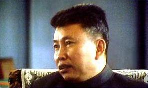
（年青时的波尔布特——光看照片难以想象此人是个恶魔）
随着柬共羽翼丰满，不愿再从属于越南共产党。1960年，柬共在首都金边召开了第一次全国代表大会（一大），正式脱离越共，成为独立的政党。那次会议确定了党章、党名（柬埔寨劳动党）、选举了中央委员会。中央委员里面有三个常委，分别是：杜斯木（Tou Samouth）、农谢、波尔布特。杜斯木任总书记。
1962年，杜斯木突然失踪，波尔布特接替杜斯木成为柬共总书记。对于杜斯木失踪，柬共对外的说法是被政府秘密杀害；但是有不少人怀疑是波尔布特干掉了杜斯木，以便自己上位。你想想看，如果柬埔寨政府抓住了杜斯木这样的大鱼，怎会秘而不宣？
柬共在60年代初期的活动，几乎没留下什么历史资料。再加上波尔布特这个人行事低调，行踪很诡秘。所以我们对这段时期的柬共，知之甚少。但是，从后来发生的很多事情可以推断出：1962年当上总书记之后，他肯定通过种种手段，使自己成为柬共独一无二的权威。可以这么说：波尔布特在柬共的地位，比老毛在中共的地位还要牛（后面会告诉你，他牛在哪儿）。
1963年，柬共召开第二次全国代表大会（二大），这次大会确立了农村包围城市，武装夺取政权的路线。这个路线基本上是照搬老毛那一套，说明波尔布特开始把老毛的理论付诸实践。二大之后，柬共高层领导纷纷离开金边，进入丛林打游击。请注意，当时柬共要推翻的，恰恰是中国人民的老朋友——西哈努克国王。
经过几年的游击战，到了六十年代末期，柬共虽然控制了一些边远的农村作根据地。但当时的游击队人数还很少（据说只有万把人），还不足以夺取全国政权。
1965年11月至66年2月，波尔布特再次到中国取经。这趟中国之行，虽然没见着毛太祖，但是见到了康生（不熟悉康生的同学，请看“这里”的简介）。康生是整人的老手，从延安时期开始，党内的很多次整肃运动，他都是急先锋。从康生这里，波尔布特学到了不少“党内清洗”的理论实践知识和宝贵经验。后来的事实证明，波尔布特青出于蓝，整人方面远远超过康生。
1968年，波尔布特再次访华，受到张春桥、姚文元的亲切接见。张姚二人又给波尔布特灌输了一大堆阶级斗争的理念。另外，当时正值文革的高潮，中国上下一片红色的海洋。这种狂热的气氛肯定也感染波尔布特。他之后的很多激进的做法，都能看到文革的影子。
打了多年游击战的柬共，终于在1970年迎来了转机。当时柬埔寨发生了“朗诺政变”。
1970年3月，西哈努克国王去苏联和中国访问。当时的首相朗诺发动政变，推翻国王的统治，把“柬埔寨王国”变为“高棉共和国”。朗诺此人长期以来是西哈努克国王的亲信，历任国防部长、首相等职务。后来因为西哈努克想走亲苏亲共的路线，而朗诺想走亲美亲西方的路线，导致两人出现矛盾。
政变后，西哈努克国王无家可归，被迫在中国成立流亡政府，包括“柬埔寨民族统一阵线”和“柬埔寨王国民族团结政府”。
政变发生后，朗诺成了柬共与西哈努克的共同敌人。在中国的撮合下，柬共加入了西哈努克的“民族统一阵线”。西哈努克也公开宣布支持柬共。在柬埔寨的传统文化中，国王是具有很高威望的。于是，柬共借助国王的威信，吸引到很多支持者，游击队的规模迅速扩张。当时很多农民并不知道共产主义为何物，是冲着国王的名声而加入柬共游击队。
中共方面，以前碍于西哈努克的面子，不方便直接支持柬共。如今西哈努克与柬共握手言和，于是中共政府开始对柬共进行大量的输血——无偿支援柬共武器弹药。后来柬共政权被越南推翻时，越军缴获的武器都是中国制造。
有了西哈努克的名望，再加上中共的军事援助，柬共实力大增。到了1973年年底，已经占领了柬埔寨大部分农村。
1975年元旦，柬共开始围攻金边。1975年4月17日，柬共攻占金边，夺取政权。在之后的三年多时间里，柬埔寨老百姓深刻体会到了什么是人间地狱。
1976年1月，柬埔寨颁布新宪法，国家名称改为“民主柬埔寨”（简称“民柬”）。这时候的西哈努克国王，已经没有利用价值了。该年4月，西哈努克国王被迫退休，然后被软禁在王宫。
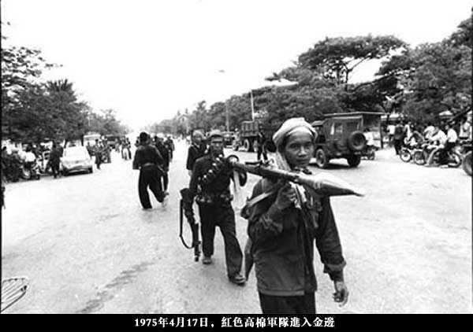
（第一批进入金边的柬共士兵）

（柬共领导层进入金边）
在“民柬”政权时期，因为掌握了国家政权，波尔布特企图用最快的速度实现真正的共产主义社会。为了达到这个目标，他做了很多前无古人的壮举。这些壮举，即使是斯大林和毛泽东也做不出来。
马克思教导我们：真正的共产主义社会是没有城乡差别，没有工农差别滴！
于是，波尔布特首先消除城乡差别。在他看来，城市是资产阶级腐朽的象征，有必要彻底铲除。把城市铲除了，大家都是农民，自然就没有城乡差别了 :)
在攻占金边的当天（4月17日），波尔布特发布一号命令，要求所有金边居民全部疏散到农村。为了欺骗金边老百姓，柬共骗他们说：这是为了躲避美国飞机的空袭。而且疏散只是暂时的，过几天就可以回来。
柬共的士兵忠实地执行了党组织的命令。对于不愿意离开的居民，就地处决；医院里的重病号，就地处决；甚至有些医院的医生因为要照顾病人，来不及离开，也就地处决。就这样，200万人口的金边，在3天之内几乎变为空城（只留下少数政府人员）。然后，柬共军队押送200万居民，疏散到全国各地。
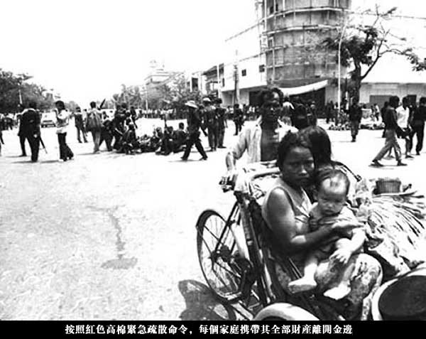
（民众从金边疏散时的情景）
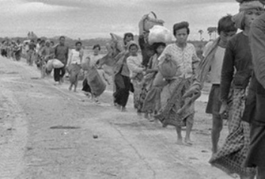
（民众从金边疏散时的情景）
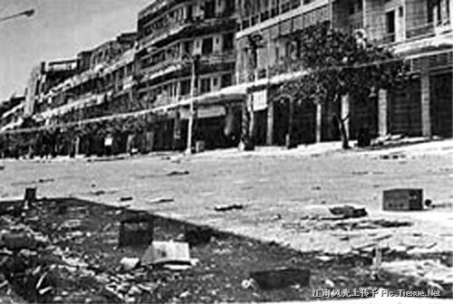
（金边变空城）
这次疏散计划，事先高度保密，只有少数柬共高层领导知晓，整个疏散计划缺乏充分准备。疏散过程中，食品供应跟不上，卫生条件跟不上。单单金边的疏散过程，就造成大量的人员死亡。据中共喉舌新华网的一篇文章称，金边的疏散造成几十万人死亡（链接在“这里”）。
除了金边，其它的城市也依样画葫芦。到了1975年下半年，柬埔寨所有的城市都变为空城，堪称现代史上的一大奇观。
对比一下天朝的文革：当时毛太祖仅仅让知识青年（知青）上山下乡劳动，而柬共让所有的城市居民（不分男女老幼）统统去农村劳动。怎么样？比老毛牛逼多了吧？
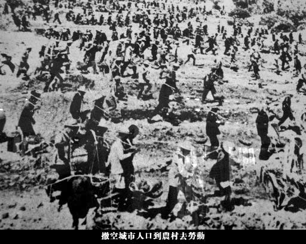
（强制【城市居民】去农村劳动）
马克思教导我们：真正的共产主义社会是没有私有制滴！
既然要彻底实现共产主义，当然也要彻底消灭私有制。在这件事上，波尔布特再次发扬了“敢为天下先”的勇气。他出台了如下几个牛B措施。
取消私有财产
因为没了私有财产，一夜之间，所有人的贫富差距彻底拉平（看到这一段，咱们天朝的毛粉们是不是很 High 啊？）
取消货币
没了私有财产，那货币也成了多余的，一并取消。而且柬共做得很绝——连“以物易物”的原始交易方式也不允许。一经发现，就地处决。
取消商品
没有了货币，自然也不存在商品。相应的，商店自然也不存在了。整个柬埔寨只在金边保留一家友谊商店，给外国使馆的工作人员买东西。
通过上述措施，柬共成为唯一一个彻底消灭私有制的共产政权。这在人类文明史上，恐怕也不多见。
看到这里，有些网友会问：没有商品和货币如何解决衣食住行问题？
是这样滴：柬共在社会基层建立公社（基本效仿天朝的人民公社）。若干个家庭组成一个公社。公社里有集体食堂，有集体宿舍。基本的生活必须品（比如衣服）全由公社统一发放（还记得天朝的凭票供应年代吗？）
说到集体宿舍，再顺便说一下：集体宿舍分男女，夫妻也只能分开住，每周只能见面一次；儿童也住集体宿舍（不跟父母住），由组织上统一抚养，便于党对儿童进行洗脑（是不是想起了反乌托邦小说《美丽新世界》的情节？）
马克思教导我们：真正的共产主义社会是没有阶级差别滴！
所以，波尔布特不但要彻底消灭私有制，还要彻底消灭阶级差别（在天朝上过政治课的同学，都知道啥是“阶级”吧？）
大部分共产党国家都是通过阶级改造的方式来消灭敌对阶级。但是波尔布特对共产主义理想的追求实在是太迫切啦，他已经等不及漫长的阶级改造。所以，他采取了最迅速的方式——直接从肉体上消灭。
柬共控制全国之后，把所有的人分为两大类：旧人和新人。所谓的“旧人”，就是原先柬共根据地的居民；其它的人统统称为“新人”。波尔布特要求，对每一个“新人”都要进行仔细严密的甄别。一旦发现阶级敌人，就地处决。
如下几种人都算是“阶级敌人”：
资本家
地主和富农
对新政权不满的人
违反新政权命令的人
原朗诺军队中的军官和士兵
原朗诺政府中的官员和公务员
......
为了更彻底地消灭阶级差异，柬共连婚姻也包办了。柬共规定：从今往后，所有的婚姻由组织上统一安排。统一安排婚姻的好处在于：可以进行混搭——让农村出身的人跟城市出身的人结婚；让知识分子出身的人跟文盲出身的人结婚......如此一来，有利于加速阶级差异的消亡，建设彻底平等的理想社会。如果哪个人胆敢反对党组织的包办婚姻，就地处决。
“消灭文化”这招，看来不是学马克思，而是学老毛的“文化大革命”。
波尔布特认为，过去的柬埔寨社会存在的种种弊端，都是因为陈旧的思想把人腐蚀了。所以，他决定彻底消灭陈旧的文化。具体的措施有：
关闭全国所有的学校（能做到这点，大概也是前无古人了）
禁止【所有的】书籍和印刷品（在“民柬政权”统治时期，连马列主义书籍都【没】出版过）
禁止【所有的】传统文化和西方文化（文革的时候，好歹还有8个样板戏；在民柬时期，啥都没有）
禁止【所有的】宗教，强迫所有僧侣还俗
全国只保留一个电台——柬共官方电台
统一服装，只能穿“黑色革命装”或“绿色军装”，禁止任何首饰（这点跟咱们的文革挺像滴）
历史上，很多共产党政权都有大清洗的癖好，比如苏联的斯大林、中国的毛腊肉、北朝鲜的金氏父子、阿尔巴尼亚的霍查、等等。但是没有哪个共产政权的政治清洗，能够跟柬共相提并论。
波尔布特搞大清洗，有2大特色：
特色1：频度高
柬共掌握全国政权仅仅3年多，就发生了9次大清洗。平均不到半年一次。天朝建国之后的政治运动，算是频繁的了，也比不上柬共。
特色2：连锅端
如果波尔布特认定某个党组织存在问题，就会把该组织所有的党政军干部全部清洗掉，一个活口也不留。被清洗的人，首先被逮捕关押，然后酷刑逼供，最后处决。大部分人都受不了酷刑，被迫承认自己及他人的罪名。因为酷刑逼供，无辜牵连的人往往会越来越多。
（上述这些可不是俺抹黑的哦，请看朝廷喉舌新华网的“这篇报道”）
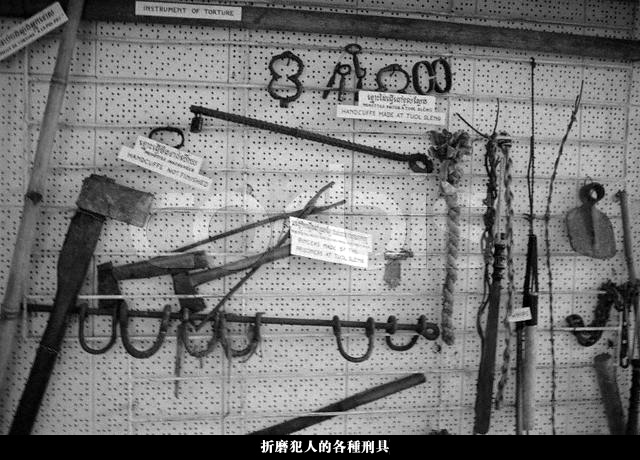
（柬埔寨大屠杀纪念馆展出的刑具）
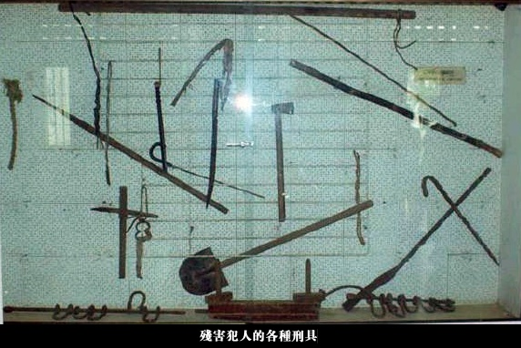
（柬埔寨大屠杀纪念馆展出的刑具）
举例1：
规模最大的一次清洗，发生在1978年，针对柬共东部大区。因为柬埔寨东部跟越南接壤，波尔布特怀疑东部大区有越南间谍。他指派西南大区的塔莫负责对东部大区的清洗，整个过程持续半年，总共杀掉10多万党政军干部。
举例2：
1960年参加柬共一大的21人，到了1977年，只剩下波尔布特、农谢、英沙里3人还活着（摘自《波尔布特传》）。除了第一任总书记杜斯木属于神秘失踪，其它17个元老大都死于党内清洗。
说到党内清洗，不得不提一下 S-21 集中营。这是柬共执政期间，名气最大的一个集中营。死在这个集中营的人，大都是柬共被清洗的党员及其家属。柬共被推翻后，金边政府把这个集中营改建为大屠杀纪念馆，对外开放。由于篇幅有限，咱就不细聊了。有兴趣的同学，请看维基百科的介绍（链接在“这里”）。
波尔布特实在太能折腾了，在他统治柬埔寨的3年多时间里，造成了大量的人口死亡。1975年之前，柬埔寨每年大约【增加】20万人口。柬共1975年夺权之后，人口开始【显著下降】。以下数据摘自天朝官方的《国际统计年鉴》。
上表可见：柬共夺权的第一年，人口就少了100多万；4年间人口少了166万，考虑到每年还有新生人口，考虑到天朝官方会有意调整统计数字（毕竟柬共是天朝支持滴），柬共造成的非正常死亡人数，【很大可能】会超过200万。这个数字占全国总人口的比例【超过 1/4】！
另据柬埔寨历史资料收集中心的报告：
下面贴几张骷髅的照片
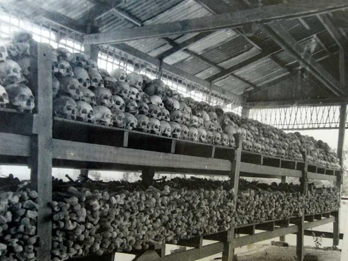
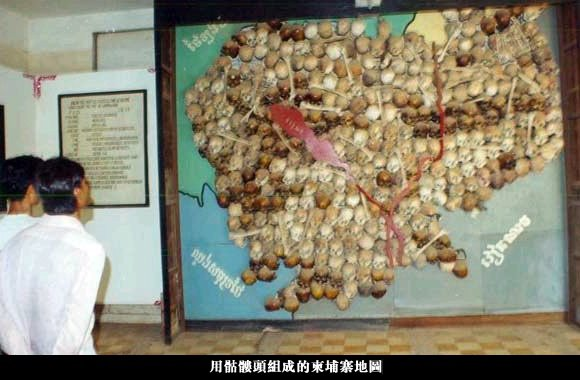
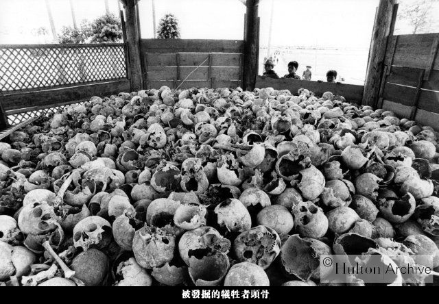
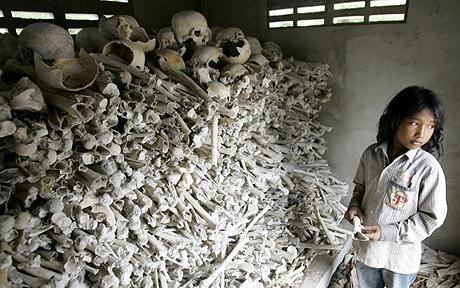
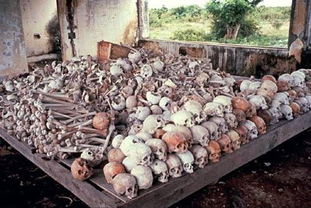
顺便说一下：天朝的三年大饥荒，虽然导致几千万人非正常死亡，但是从人口比例上看，也不如柬埔寨那么高。对红色高棉这种史无前例的屠杀，某网友是这样评价滴：
柬共干了这么多丧尽天良的事情，但是咱们天朝对他却一直大力支持。给大伙儿看几张照片，看完你就明白，中共政权是如何【力挺】红色高棉滴。
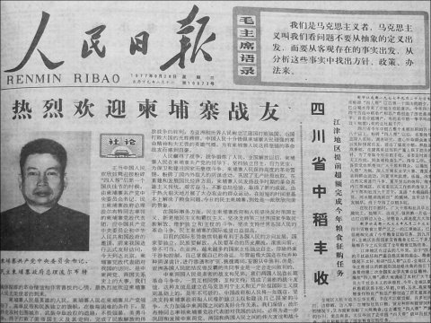
（波尔布特访华，上了《日人民报》的头版头条）
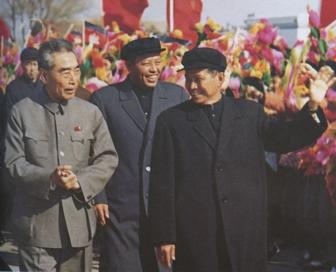
（丞相周恩来亲自去机场迎接波尔布特）
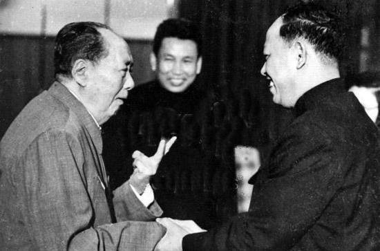
（毛腊肉与英沙里亲切握手，中间微笑的那位是波尔布特）
（华国锋亲自到机场迎接波尔布特）
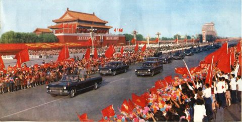
（北京长安街上盛大的欢迎仪式，华国锋和波尔布特站在第一辆汽车上）
俗话说，多行不义必自毙。柬共建立的“民主柬埔寨”政权，仅仅三年多就被推翻。而且很讽刺的是，推翻它的，不是资本主义国家，反而是同为【社会主义阵营】的越南。
1978年圣诞前夜，越南军队投入14个师，发动对柬埔寨的全面入侵。
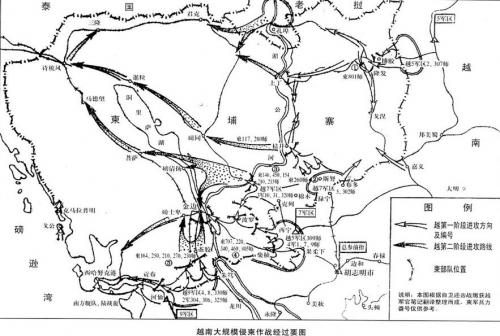
（越南入侵柬埔寨的战况图）
经过波尔布特三年的折腾，无论是柬埔寨军方还是政府，都已经元气大伤。所以越南军队势如破竹，而柬共的军队节节败退。10天之后的1月4日，越军已经完全控制了湄公河东岸地区。1979年1月7日晚间，越南军队攻入金边，短命的“民主柬埔寨”政权宣告终结。
虽然政权被推翻，但柬共并没有彻底消失。他们又回到西部的深山老林打游击。这个游击战，整整打了20年（下面会聊到这块）。
由于越南军队的推进太快了，很多柬共官员根本来不及销毁机密档案，很多机密档案都落到了越军手中。比如前面提到的 S-21 集中营，有4000份死囚档案被缴获。另外，越军在柬埔寨各地发现很多乱葬坑。
为了美化自己的军事入侵，越南方面对全世界公布了柬共令人发指的种种罪行。直到这时，其它国家才知道——红色高棉原来比纳粹还残忍。
以下照片是：S-21集中营的死囚
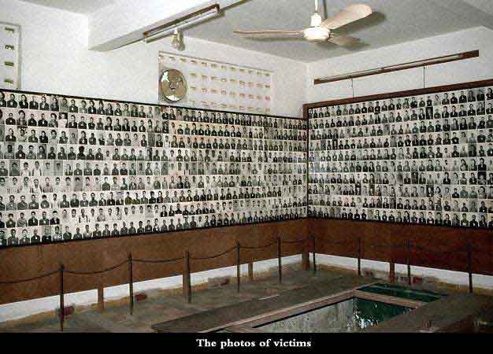
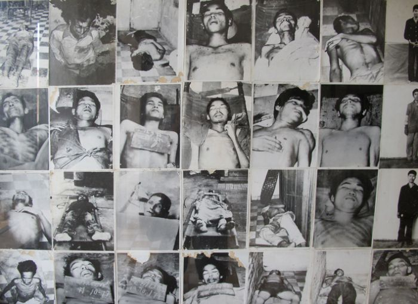
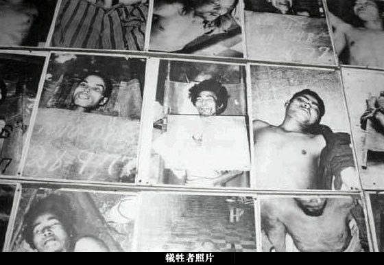
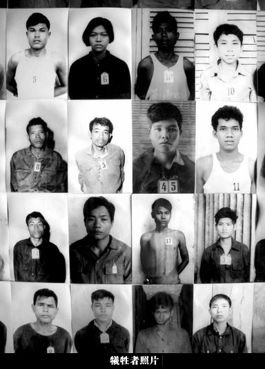
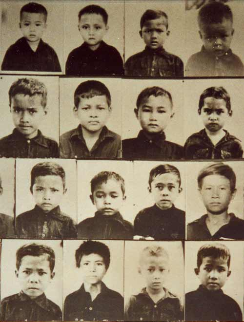
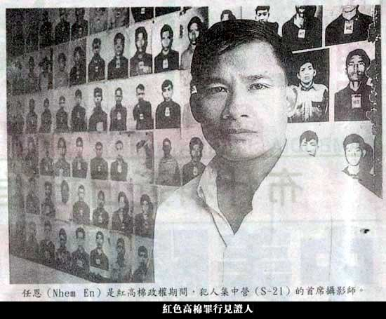
（集中营的摄影师——红色高棉罪行的见证人）
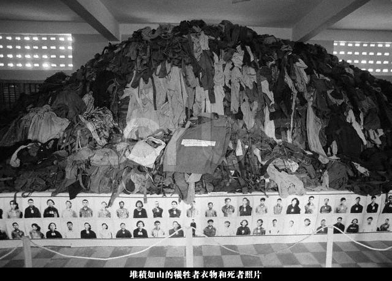
（集中营堆积如山的死者衣物）
全球共产运动的历史上，经历过两次重大的舆论挫折。第一次是赫鲁晓夫全面否定斯大林，把斯大林很多龌龊的老底公之于众；第二次就是越南入侵之后，公布的红色高棉罪行。这两次家丑，都是被社会主义阵营的自己人曝光，非常有说服力。
通过这两次曝光，使得西方世界的很多人彻底认清了共产运动的邪恶本质。马克思曾说过：资本来到世间，从头到脚，每个毛孔都滴着血和肮脏的东西。俺觉得这句话要稍微修改一下：共产主义来到世间，从头到脚，每个毛孔都滴着血和肮脏的东西。
在本文末尾，俺还会分享几本电子书，帮你认清共产运动的真面目。
顺便说一个小插曲：就在越南推翻柬共政权之后一个月（1979年2月），中共军队突然入侵越南。这次入侵很有意思，只打了28天，而且中共军队后来主动撤回国内。
关于这次战争，中共官方的说法是：对越自卫反击战。
俺的点评：
朝廷的说法显然是【忽悠】。真实的情况是——当时柬共兵败如山倒，越军正在全力追击柬共残部。中共担心红色高棉被越南彻底消灭，所以玩了一个围魏救赵的把戏——通过出兵越南北部，迫使越南抽调兵力到北部边境，以此来减轻柬共的军事压力。
柬共政权垮台后，柬埔寨陷入多方混战。
1. 越南推翻了“民柬”政权后，扶植了韩桑林政权（也就是金边政权），国名改为“柬埔寨人民共和国”。
2. 柬共元气大伤，退入西部的深山老林打游击。
3. 西哈努克也逃脱了柬共的控制，并利用自己的威望，组建了奉辛比克党，建立了自己的武装，用来对抗越南入侵。
4. 另外，柬埔寨民间也出现了若干反抗越南入侵的武装，比较有名的是宋双的队伍。
这就是当时柬埔寨最大的4个政治派别。
值得一提的是，无论是奉辛比克党还是其它抗越武装，都极力反对红色高棉。可见这时候的红色高棉，已经臭名远扬了。
1989年9月，越南从柬埔寨撤军。1991年10月，经联合国调停，柬埔寨冲突各方（包括红色高棉）签署了《巴黎和平协定》，实现民族和解。协议签署后，计划在1993年5月举行全国大选。为了保障这次全国大选，联合国派驻了11个国家的维和部队，还有34个国家的军事观察员。各种开支累计27.8亿美元，创联合国成立以来的最高纪录。
谁曾想，到了1993年4月，红色高棉宣布，抵制这次全国大选。这个举动彻底葬送了红色高棉。
1. 让柬埔寨全国的老百姓都觉得是红色高棉在破坏和平进程
2. 不光得罪了联合国，还遭到全世界的谴责，连中国也不再大力支持他
3. 导致了红色高棉内部的分裂（下面会提到）
柬埔寨大选之后，其它各派的武装都整编为政府军，开始围剿红色高棉。没了中国的支援，红色高棉的战斗力大不如前，根据地越来越小。
抵制大选的决定，是波尔布特作出的。当时红色高棉的高层领导中，很多人（包括：英沙里、宋成、乔森潘）都赞同参加大选。但是参加大选就意味着要放下武器，接受联合国的整编。这是波尔布特绝对无法容忍的。波尔布特有一句口头禅“要战斗到世界末日”，很能反映出他的性格。
对于是否参加大选的问题，英沙里和波尔布特闹翻了。要是在过去，党内没人敢跟波尔布特顶嘴。但是如今的局面不同，红色高棉只剩下几个分散的小根据地。波尔布特待在总部安隆汶，而英沙里驻守在拜林。拜林的驻军都是英沙里的铁杆，波尔布特拿他没办法。
眼看着红色高棉一日不如一日，1996年8月，英沙里宣布倒戈，带领2个精锐师投靠政府军。金边政权对此喜出望外，宣布赦免英沙里过去的罪行。英沙里手下的军官也没有受到惩罚，而是编入正规部队，继续当军官。
本来已经有很多红色高棉军官厌倦了几十年的战斗，希望回归社会，过上正常生活。英沙里的倒戈立刻引发连锁反应，很多地区的指挥官私自带队叛逃，使得红色高棉损失了 80% 的战斗力。
英沙里倒戈之后，波尔布特加紧对高级将领进行暗中调查。到了97年6月，又发现宋成偷偷跟金边政权沟通。波尔布特一怒之下，命令卫兵把宋成全家老小都杀了。
在民柬时期，宋成一直担任总参谋长和国民军总司令，在军队中很有威信。后来因为主张参加大选，被波尔布特降职，但军中威信依在。宋成全家被灭门的消息传出后，引发红色高棉军队的哗变。守卫在总部安隆汶外围的军官，掉转枪口攻打安隆汶。最终，宋成的老部下抓到了波尔布特，并对他进行审判，判处终身监禁。
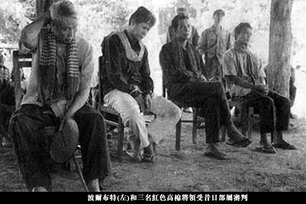
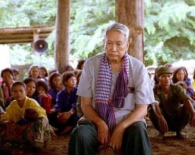
波尔布特被自己的部下逮捕并审判，实在是一大讽刺。1998年4月15日，监禁中的波尔布特因心脏病死亡。这位共产主义【恶魔】终于去见马克思了。
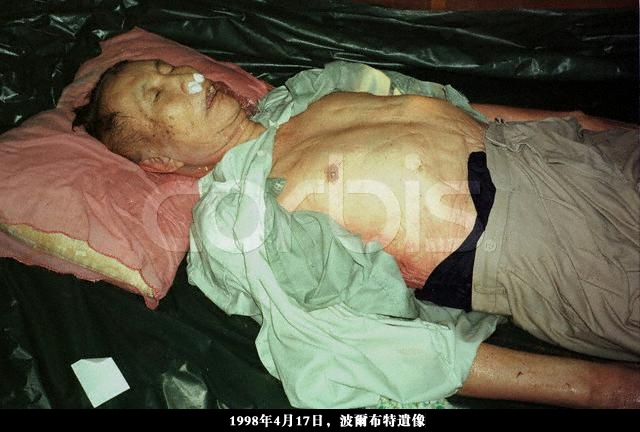
长期以来，波尔布特一直是红色高棉的灵魂和旗帜。所以，波尔布特被自己的部下审判，极大动摇了红色高棉基层士兵的斗志。另外，柬埔寨政府军也趁机加强了围剿。1999年3月，最后一支红色高棉武装投降，红色高棉终于被彻底铲除。
在本文发布之后6年，俺又写了一篇《为什么马克思是错的？——全面批判马列主义的知名著作导读》
马克思鼓吹的共产主义理想说要建造人间天堂，但最后的结果却常常变成人间地狱。不光柬埔寨如此、中国、苏联、北朝鲜亦如此。这个问题值得大伙儿思考。上述这篇博文介绍的【名著】，或许有助于你找到答案。
俺博客上，和本文相关的帖子（需翻墙）：
《为什么马克思是错的？——全面批判马列主义的知名著作导读》
《苏联是如何被慢慢勒死的？——聊聊冷战中美国的遏制战略》
《影评：＜苏维埃往事＞——帮你看清苏联和纳粹的共同本质》
《北朝鲜金氏王朝的崛起——聊聊金日成的历次大清洗》
《面对共产党——民国人文大师的众生相》
《每周转载：关于西哈努克的幸福生活（3篇）》
俺一向很喜欢给党国抹黑，也很喜欢给共产运动抹黑。正好趁机扫盲一下红色高棉那惨绝人寰的历史。由于本文比较长，俺特地加了些照片，避免大伙儿阅读疲劳。有些插图比较吓人，要有心理准备哦。
★崛起
“红色高棉”是柬埔寨共产党的别称。“柬埔寨共产党”简称“柬共”，也称“赤柬”。它最早出现于1951年，起先只不过是越南共产党的柬埔寨支部，名不见经传。
这样一个小党派，竟然在20年间，发展成人类历史上【最】激进的共产政权（没有之一）。要想知道其中的缘由，必须先聊一下波尔布特这个家伙。
◇波尔布特其人
波尔布特出身于柬埔寨的富裕家庭，原名“Saloth Sar”，柬共夺权后才改名波尔布特（Pol Pot）。为了叙述方便，以下都称“波尔布特”。
1949年，柬埔寨官方资助21名留学生去法国留学，其中就有波尔布特。留学法国期间，波尔布特加入法国共产党。另外，他跟十几个留法的柬埔寨学生一起成立了“柬埔寨马克思主义小组”。这个小组中的好些人（英沙里、宋成、乔森潘、符宁、等）后来都成了柬共的高层领导。
1953年，波尔布特学成归国，在首都金边当中学教师，暗地里从事共产党的地下活动。另据传闻，50年代后期，他秘密到中国南部的游击战训练基地受训。大伙儿别奇怪，在老毛时代，天朝整天喊着要“输出革命”，要“解放全世界”，当时几乎每一个东南亚国家都有中共资助的共党游击队。
大概是在中国受训的缘故，波尔布特开始信奉毛太祖的那套理论（枪杆子出政权、农村包围城市）。
（年青时的波尔布特——光看照片难以想象此人是个恶魔）
◇柬共成立
随着柬共羽翼丰满，不愿再从属于越南共产党。1960年，柬共在首都金边召开了第一次全国代表大会（一大），正式脱离越共，成为独立的政党。那次会议确定了党章、党名（柬埔寨劳动党）、选举了中央委员会。中央委员里面有三个常委，分别是：杜斯木（Tou Samouth）、农谢、波尔布特。杜斯木任总书记。
◇波尔布特上位
1962年，杜斯木突然失踪，波尔布特接替杜斯木成为柬共总书记。对于杜斯木失踪，柬共对外的说法是被政府秘密杀害；但是有不少人怀疑是波尔布特干掉了杜斯木，以便自己上位。你想想看，如果柬埔寨政府抓住了杜斯木这样的大鱼，怎会秘而不宣？
柬共在60年代初期的活动，几乎没留下什么历史资料。再加上波尔布特这个人行事低调，行踪很诡秘。所以我们对这段时期的柬共，知之甚少。但是，从后来发生的很多事情可以推断出：1962年当上总书记之后，他肯定通过种种手段，使自己成为柬共独一无二的权威。可以这么说：波尔布特在柬共的地位，比老毛在中共的地位还要牛（后面会告诉你，他牛在哪儿）。
◇开展武装斗争
1963年，柬共召开第二次全国代表大会（二大），这次大会确立了农村包围城市，武装夺取政权的路线。这个路线基本上是照搬老毛那一套，说明波尔布特开始把老毛的理论付诸实践。二大之后，柬共高层领导纷纷离开金边，进入丛林打游击。请注意，当时柬共要推翻的，恰恰是中国人民的老朋友——西哈努克国王。
经过几年的游击战，到了六十年代末期，柬共虽然控制了一些边远的农村作根据地。但当时的游击队人数还很少（据说只有万把人），还不足以夺取全国政权。
◇到中国朝圣
1965年11月至66年2月，波尔布特再次到中国取经。这趟中国之行，虽然没见着毛太祖，但是见到了康生（不熟悉康生的同学，请看“这里”的简介）。康生是整人的老手，从延安时期开始，党内的很多次整肃运动，他都是急先锋。从康生这里，波尔布特学到了不少“党内清洗”的理论实践知识和宝贵经验。后来的事实证明，波尔布特青出于蓝，整人方面远远超过康生。
1968年，波尔布特再次访华，受到张春桥、姚文元的亲切接见。张姚二人又给波尔布特灌输了一大堆阶级斗争的理念。另外，当时正值文革的高潮，中国上下一片红色的海洋。这种狂热的气氛肯定也感染波尔布特。他之后的很多激进的做法，都能看到文革的影子。
★夺权
打了多年游击战的柬共，终于在1970年迎来了转机。当时柬埔寨发生了“朗诺政变”。
◇朗诺政变
1970年3月，西哈努克国王去苏联和中国访问。当时的首相朗诺发动政变，推翻国王的统治，把“柬埔寨王国”变为“高棉共和国”。朗诺此人长期以来是西哈努克国王的亲信，历任国防部长、首相等职务。后来因为西哈努克想走亲苏亲共的路线，而朗诺想走亲美亲西方的路线，导致两人出现矛盾。
政变后，西哈努克国王无家可归，被迫在中国成立流亡政府，包括“柬埔寨民族统一阵线”和“柬埔寨王国民族团结政府”。
◇柬共与西哈努克联手
政变发生后，朗诺成了柬共与西哈努克的共同敌人。在中国的撮合下，柬共加入了西哈努克的“民族统一阵线”。西哈努克也公开宣布支持柬共。在柬埔寨的传统文化中，国王是具有很高威望的。于是，柬共借助国王的威信，吸引到很多支持者，游击队的规模迅速扩张。当时很多农民并不知道共产主义为何物，是冲着国王的名声而加入柬共游击队。
中共方面，以前碍于西哈努克的面子，不方便直接支持柬共。如今西哈努克与柬共握手言和，于是中共政府开始对柬共进行大量的输血——无偿支援柬共武器弹药。后来柬共政权被越南推翻时，越军缴获的武器都是中国制造。
有了西哈努克的名望，再加上中共的军事援助，柬共实力大增。到了1973年年底，已经占领了柬埔寨大部分农村。
◇攻占金边
1975年元旦，柬共开始围攻金边。1975年4月17日，柬共攻占金边，夺取政权。在之后的三年多时间里，柬埔寨老百姓深刻体会到了什么是人间地狱。
1976年1月，柬埔寨颁布新宪法，国家名称改为“民主柬埔寨”（简称“民柬”）。这时候的西哈努克国王，已经没有利用价值了。该年4月，西哈努克国王被迫退休，然后被软禁在王宫。
（第一批进入金边的柬共士兵）
（柬共领导层进入金边）
★暴政
在“民柬”政权时期，因为掌握了国家政权，波尔布特企图用最快的速度实现真正的共产主义社会。为了达到这个目标，他做了很多前无古人的壮举。这些壮举，即使是斯大林和毛泽东也做不出来。
◇消灭城乡差别
马克思教导我们：真正的共产主义社会是没有城乡差别，没有工农差别滴！
于是，波尔布特首先消除城乡差别。在他看来，城市是资产阶级腐朽的象征，有必要彻底铲除。把城市铲除了，大家都是农民，自然就没有城乡差别了 :)
在攻占金边的当天（4月17日），波尔布特发布一号命令，要求所有金边居民全部疏散到农村。为了欺骗金边老百姓，柬共骗他们说：这是为了躲避美国飞机的空袭。而且疏散只是暂时的，过几天就可以回来。
柬共的士兵忠实地执行了党组织的命令。对于不愿意离开的居民，就地处决；医院里的重病号，就地处决；甚至有些医院的医生因为要照顾病人，来不及离开，也就地处决。就这样，200万人口的金边，在3天之内几乎变为空城（只留下少数政府人员）。然后，柬共军队押送200万居民，疏散到全国各地。
（民众从金边疏散时的情景）
（民众从金边疏散时的情景）
（金边变空城）
这次疏散计划，事先高度保密，只有少数柬共高层领导知晓，整个疏散计划缺乏充分准备。疏散过程中，食品供应跟不上，卫生条件跟不上。单单金边的疏散过程，就造成大量的人员死亡。据中共喉舌新华网的一篇文章称，金边的疏散造成几十万人死亡（链接在“这里”）。
除了金边，其它的城市也依样画葫芦。到了1975年下半年，柬埔寨所有的城市都变为空城，堪称现代史上的一大奇观。
对比一下天朝的文革：当时毛太祖仅仅让知识青年（知青）上山下乡劳动，而柬共让所有的城市居民（不分男女老幼）统统去农村劳动。怎么样？比老毛牛逼多了吧？
（强制【城市居民】去农村劳动）
◇消灭私有制
马克思教导我们：真正的共产主义社会是没有私有制滴！
既然要彻底实现共产主义，当然也要彻底消灭私有制。在这件事上，波尔布特再次发扬了“敢为天下先”的勇气。他出台了如下几个牛B措施。
取消私有财产
因为没了私有财产，一夜之间，所有人的贫富差距彻底拉平（看到这一段，咱们天朝的毛粉们是不是很 High 啊？）
取消货币
没了私有财产，那货币也成了多余的，一并取消。而且柬共做得很绝——连“以物易物”的原始交易方式也不允许。一经发现，就地处决。
取消商品
没有了货币，自然也不存在商品。相应的，商店自然也不存在了。整个柬埔寨只在金边保留一家友谊商店，给外国使馆的工作人员买东西。
通过上述措施，柬共成为唯一一个彻底消灭私有制的共产政权。这在人类文明史上，恐怕也不多见。
看到这里，有些网友会问：没有商品和货币如何解决衣食住行问题？
是这样滴：柬共在社会基层建立公社（基本效仿天朝的人民公社）。若干个家庭组成一个公社。公社里有集体食堂，有集体宿舍。基本的生活必须品（比如衣服）全由公社统一发放（还记得天朝的凭票供应年代吗？）
说到集体宿舍，再顺便说一下：集体宿舍分男女，夫妻也只能分开住，每周只能见面一次；儿童也住集体宿舍（不跟父母住），由组织上统一抚养，便于党对儿童进行洗脑（是不是想起了反乌托邦小说《美丽新世界》的情节？）
◇消灭阶级差别
马克思教导我们：真正的共产主义社会是没有阶级差别滴！
所以，波尔布特不但要彻底消灭私有制，还要彻底消灭阶级差别（在天朝上过政治课的同学，都知道啥是“阶级”吧？）
大部分共产党国家都是通过阶级改造的方式来消灭敌对阶级。但是波尔布特对共产主义理想的追求实在是太迫切啦，他已经等不及漫长的阶级改造。所以，他采取了最迅速的方式——直接从肉体上消灭。
柬共控制全国之后，把所有的人分为两大类：旧人和新人。所谓的“旧人”，就是原先柬共根据地的居民；其它的人统统称为“新人”。波尔布特要求，对每一个“新人”都要进行仔细严密的甄别。一旦发现阶级敌人，就地处决。
如下几种人都算是“阶级敌人”：
资本家
地主和富农
对新政权不满的人
违反新政权命令的人
原朗诺军队中的军官和士兵
原朗诺政府中的官员和公务员
......
为了更彻底地消灭阶级差异，柬共连婚姻也包办了。柬共规定：从今往后，所有的婚姻由组织上统一安排。统一安排婚姻的好处在于：可以进行混搭——让农村出身的人跟城市出身的人结婚；让知识分子出身的人跟文盲出身的人结婚......如此一来，有利于加速阶级差异的消亡，建设彻底平等的理想社会。如果哪个人胆敢反对党组织的包办婚姻，就地处决。
◇消灭文化
“消灭文化”这招，看来不是学马克思，而是学老毛的“文化大革命”。
波尔布特认为，过去的柬埔寨社会存在的种种弊端，都是因为陈旧的思想把人腐蚀了。所以，他决定彻底消灭陈旧的文化。具体的措施有：
关闭全国所有的学校（能做到这点，大概也是前无古人了）
禁止【所有的】书籍和印刷品（在“民柬政权”统治时期，连马列主义书籍都【没】出版过）
禁止【所有的】传统文化和西方文化（文革的时候，好歹还有8个样板戏；在民柬时期，啥都没有）
禁止【所有的】宗教，强迫所有僧侣还俗
全国只保留一个电台——柬共官方电台
统一服装，只能穿“黑色革命装”或“绿色军装”，禁止任何首饰（这点跟咱们的文革挺像滴）
◇党内大清洗
历史上，很多共产党政权都有大清洗的癖好，比如苏联的斯大林、中国的毛腊肉、北朝鲜的金氏父子、阿尔巴尼亚的霍查、等等。但是没有哪个共产政权的政治清洗，能够跟柬共相提并论。
波尔布特搞大清洗，有2大特色：
特色1：频度高
柬共掌握全国政权仅仅3年多，就发生了9次大清洗。平均不到半年一次。天朝建国之后的政治运动，算是频繁的了，也比不上柬共。
特色2：连锅端
如果波尔布特认定某个党组织存在问题，就会把该组织所有的党政军干部全部清洗掉，一个活口也不留。被清洗的人，首先被逮捕关押，然后酷刑逼供，最后处决。大部分人都受不了酷刑，被迫承认自己及他人的罪名。因为酷刑逼供，无辜牵连的人往往会越来越多。
（上述这些可不是俺抹黑的哦，请看朝廷喉舌新华网的“这篇报道”）
（柬埔寨大屠杀纪念馆展出的刑具）
（柬埔寨大屠杀纪念馆展出的刑具）
举例1：
规模最大的一次清洗，发生在1978年，针对柬共东部大区。因为柬埔寨东部跟越南接壤，波尔布特怀疑东部大区有越南间谍。他指派西南大区的塔莫负责对东部大区的清洗，整个过程持续半年，总共杀掉10多万党政军干部。
举例2：
1960年参加柬共一大的21人，到了1977年，只剩下波尔布特、农谢、英沙里3人还活着（摘自《波尔布特传》）。除了第一任总书记杜斯木属于神秘失踪，其它17个元老大都死于党内清洗。
说到党内清洗，不得不提一下 S-21 集中营。这是柬共执政期间，名气最大的一个集中营。死在这个集中营的人，大都是柬共被清洗的党员及其家属。柬共被推翻后，金边政府把这个集中营改建为大屠杀纪念馆，对外开放。由于篇幅有限，咱就不细聊了。有兴趣的同学，请看维基百科的介绍（链接在“这里”）。
◇非正常死亡人口
波尔布特实在太能折腾了，在他统治柬埔寨的3年多时间里，造成了大量的人口死亡。1975年之前，柬埔寨每年大约【增加】20万人口。柬共1975年夺权之后，人口开始【显著下降】。以下数据摘自天朝官方的《国际统计年鉴》。
| 年份 | 总人口 |
|---|---|
| 1975年 | 811万 |
| 1976年 | 697万 |
| 1977年 | 679万 |
| 1978年 | 660万 |
| 1979年 | 645万 |
上表可见：柬共夺权的第一年，人口就少了100多万；4年间人口少了166万，考虑到每年还有新生人口，考虑到天朝官方会有意调整统计数字（毕竟柬共是天朝支持滴），柬共造成的非正常死亡人数，【很大可能】会超过200万。这个数字占全国总人口的比例【超过 1/4】！
另据柬埔寨历史资料收集中心的报告：
在美国、澳大利亚、荷兰3国的协助下，在柬埔寨170个县中的81个县进行了勘察，找到9138个乱葬坑，挖出近150万个骷髅。这些人死于处决、劳累、饥饿、营养不良和疾病。这可不是俺瞎掰的，有天朝官网的链接为证（在“这里”）。提醒一下：他们只找了81个县，就找到这么多骷髅。柬埔寨全国有170个县，到底有多少个乱葬坑，只有天晓得。
下面贴几张骷髅的照片
顺便说一下：天朝的三年大饥荒，虽然导致几千万人非正常死亡，但是从人口比例上看，也不如柬埔寨那么高。对红色高棉这种史无前例的屠杀，某网友是这样评价滴：
柬埔寨大屠杀
在速度上，它超过斯大林的肃反
在广泛性上，它超过中国文化大革命
在毁国毁民程度上，它超过非洲卢旺达
在残暴和野蛮程度上，它超过纳粹的希特勒
在死亡人数占总人口比例上，它创造了世界纪录
◇中共的力挺
柬共干了这么多丧尽天良的事情，但是咱们天朝对他却一直大力支持。给大伙儿看几张照片，看完你就明白，中共政权是如何【力挺】红色高棉滴。
（波尔布特访华，上了《日人民报》的头版头条）
（丞相周恩来亲自去机场迎接波尔布特）
（毛腊肉与英沙里亲切握手，中间微笑的那位是波尔布特）
（华国锋亲自到机场迎接波尔布特）
（北京长安街上盛大的欢迎仪式，华国锋和波尔布特站在第一辆汽车上）
★溃败
◇越南军事入侵
俗话说，多行不义必自毙。柬共建立的“民主柬埔寨”政权，仅仅三年多就被推翻。而且很讽刺的是，推翻它的，不是资本主义国家，反而是同为【社会主义阵营】的越南。
1978年圣诞前夜，越南军队投入14个师，发动对柬埔寨的全面入侵。
（越南入侵柬埔寨的战况图）
经过波尔布特三年的折腾，无论是柬埔寨军方还是政府，都已经元气大伤。所以越南军队势如破竹，而柬共的军队节节败退。10天之后的1月4日，越军已经完全控制了湄公河东岸地区。1979年1月7日晚间，越南军队攻入金边，短命的“民主柬埔寨”政权宣告终结。
虽然政权被推翻，但柬共并没有彻底消失。他们又回到西部的深山老林打游击。这个游击战，整整打了20年（下面会聊到这块）。
◇柬共罪行曝光
由于越南军队的推进太快了，很多柬共官员根本来不及销毁机密档案，很多机密档案都落到了越军手中。比如前面提到的 S-21 集中营，有4000份死囚档案被缴获。另外，越军在柬埔寨各地发现很多乱葬坑。
为了美化自己的军事入侵，越南方面对全世界公布了柬共令人发指的种种罪行。直到这时，其它国家才知道——红色高棉原来比纳粹还残忍。
以下照片是：S-21集中营的死囚
（集中营的摄影师——红色高棉罪行的见证人）
（集中营堆积如山的死者衣物）
全球共产运动的历史上，经历过两次重大的舆论挫折。第一次是赫鲁晓夫全面否定斯大林，把斯大林很多龌龊的老底公之于众；第二次就是越南入侵之后，公布的红色高棉罪行。这两次家丑，都是被社会主义阵营的自己人曝光，非常有说服力。
通过这两次曝光，使得西方世界的很多人彻底认清了共产运动的邪恶本质。马克思曾说过：资本来到世间，从头到脚，每个毛孔都滴着血和肮脏的东西。俺觉得这句话要稍微修改一下：共产主义来到世间，从头到脚，每个毛孔都滴着血和肮脏的东西。
在本文末尾，俺还会分享几本电子书，帮你认清共产运动的真面目。
◇中共围魏救赵
顺便说一个小插曲：就在越南推翻柬共政权之后一个月（1979年2月），中共军队突然入侵越南。这次入侵很有意思，只打了28天，而且中共军队后来主动撤回国内。
关于这次战争，中共官方的说法是：对越自卫反击战。
俺的点评：
朝廷的说法显然是【忽悠】。真实的情况是——当时柬共兵败如山倒，越军正在全力追击柬共残部。中共担心红色高棉被越南彻底消灭，所以玩了一个围魏救赵的把戏——通过出兵越南北部，迫使越南抽调兵力到北部边境，以此来减轻柬共的军事压力。
★末路
◇多方混战
柬共政权垮台后，柬埔寨陷入多方混战。
1. 越南推翻了“民柬”政权后，扶植了韩桑林政权（也就是金边政权），国名改为“柬埔寨人民共和国”。
2. 柬共元气大伤，退入西部的深山老林打游击。
3. 西哈努克也逃脱了柬共的控制，并利用自己的威望，组建了奉辛比克党，建立了自己的武装，用来对抗越南入侵。
4. 另外，柬埔寨民间也出现了若干反抗越南入侵的武装，比较有名的是宋双的队伍。
这就是当时柬埔寨最大的4个政治派别。
值得一提的是，无论是奉辛比克党还是其它抗越武装，都极力反对红色高棉。可见这时候的红色高棉，已经臭名远扬了。
◇抵制大选
1989年9月，越南从柬埔寨撤军。1991年10月，经联合国调停，柬埔寨冲突各方（包括红色高棉）签署了《巴黎和平协定》，实现民族和解。协议签署后，计划在1993年5月举行全国大选。为了保障这次全国大选，联合国派驻了11个国家的维和部队，还有34个国家的军事观察员。各种开支累计27.8亿美元，创联合国成立以来的最高纪录。
谁曾想，到了1993年4月，红色高棉宣布，抵制这次全国大选。这个举动彻底葬送了红色高棉。
1. 让柬埔寨全国的老百姓都觉得是红色高棉在破坏和平进程
2. 不光得罪了联合国，还遭到全世界的谴责，连中国也不再大力支持他
3. 导致了红色高棉内部的分裂（下面会提到）
柬埔寨大选之后，其它各派的武装都整编为政府军，开始围剿红色高棉。没了中国的支援，红色高棉的战斗力大不如前，根据地越来越小。
◇英沙里反戈一击
抵制大选的决定，是波尔布特作出的。当时红色高棉的高层领导中，很多人（包括：英沙里、宋成、乔森潘）都赞同参加大选。但是参加大选就意味着要放下武器，接受联合国的整编。这是波尔布特绝对无法容忍的。波尔布特有一句口头禅“要战斗到世界末日”，很能反映出他的性格。
对于是否参加大选的问题，英沙里和波尔布特闹翻了。要是在过去，党内没人敢跟波尔布特顶嘴。但是如今的局面不同，红色高棉只剩下几个分散的小根据地。波尔布特待在总部安隆汶，而英沙里驻守在拜林。拜林的驻军都是英沙里的铁杆，波尔布特拿他没办法。
眼看着红色高棉一日不如一日，1996年8月，英沙里宣布倒戈，带领2个精锐师投靠政府军。金边政权对此喜出望外，宣布赦免英沙里过去的罪行。英沙里手下的军官也没有受到惩罚，而是编入正规部队，继续当军官。
本来已经有很多红色高棉军官厌倦了几十年的战斗，希望回归社会，过上正常生活。英沙里的倒戈立刻引发连锁反应，很多地区的指挥官私自带队叛逃，使得红色高棉损失了 80% 的战斗力。
◇波尔布特被自己人审判
英沙里倒戈之后，波尔布特加紧对高级将领进行暗中调查。到了97年6月，又发现宋成偷偷跟金边政权沟通。波尔布特一怒之下，命令卫兵把宋成全家老小都杀了。
在民柬时期，宋成一直担任总参谋长和国民军总司令，在军队中很有威信。后来因为主张参加大选，被波尔布特降职，但军中威信依在。宋成全家被灭门的消息传出后，引发红色高棉军队的哗变。守卫在总部安隆汶外围的军官，掉转枪口攻打安隆汶。最终，宋成的老部下抓到了波尔布特，并对他进行审判，判处终身监禁。
波尔布特被自己的部下逮捕并审判，实在是一大讽刺。1998年4月15日，监禁中的波尔布特因心脏病死亡。这位共产主义【恶魔】终于去见马克思了。
长期以来，波尔布特一直是红色高棉的灵魂和旗帜。所以，波尔布特被自己的部下审判，极大动摇了红色高棉基层士兵的斗志。另外，柬埔寨政府军也趁机加强了围剿。1999年3月，最后一支红色高棉武装投降，红色高棉终于被彻底铲除。
★结尾
在本文发布之后6年，俺又写了一篇《为什么马克思是错的？——全面批判马列主义的知名著作导读》
马克思鼓吹的共产主义理想说要建造人间天堂，但最后的结果却常常变成人间地狱。不光柬埔寨如此、中国、苏联、北朝鲜亦如此。这个问题值得大伙儿思考。上述这篇博文介绍的【名著】，或许有助于你找到答案。
俺博客上，和本文相关的帖子（需翻墙）：
《为什么马克思是错的？——全面批判马列主义的知名著作导读》
《苏联是如何被慢慢勒死的？——聊聊冷战中美国的遏制战略》
《影评：＜苏维埃往事＞——帮你看清苏联和纳粹的共同本质》
《北朝鲜金氏王朝的崛起——聊聊金日成的历次大清洗》
《面对共产党——民国人文大师的众生相》
《每周转载：关于西哈努克的幸福生活（3篇）》
版权声明
本博客所有的原创文章，作者皆保留版权。转载必须包含本声明，保持本文完整，并以超链接形式注明作者编程随想和本文原始地址：
https://program-think.blogspot.com/2012/10/history-of-red-khmers.html
本博客所有的原创文章，作者皆保留版权。转载必须包含本声明，保持本文完整，并以超链接形式注明作者编程随想和本文原始地址：
https://program-think.blogspot.com/2012/10/history-of-red-khmers.html